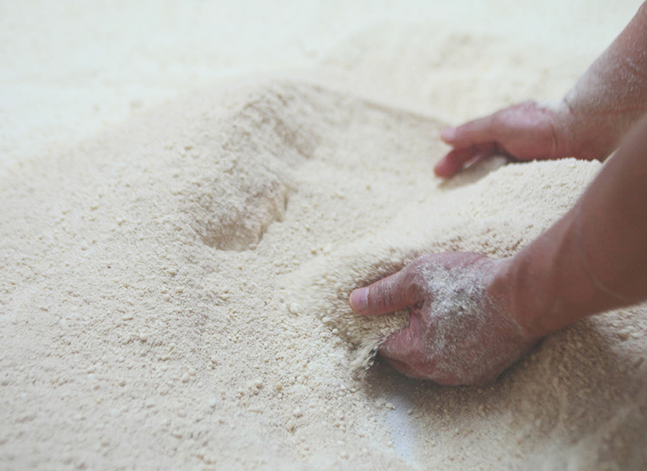
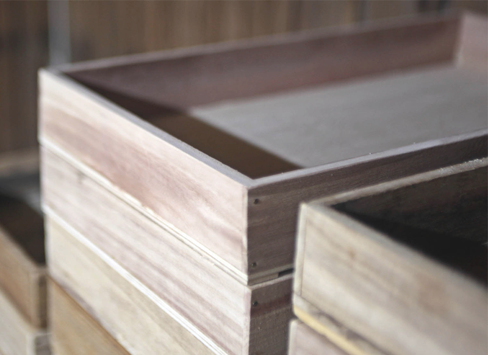

손 맛이 완성되는 보쌈실
적절한 온도 유지를 위해 술밥을 큰 보자기로 덮고 발효하는 보쌈실입니다.

오동나무로 만들어진 종국실
증미실에서 만들어진 술밥의 일부는 오동나무 상자에서 발효하는 종국실입니다.
전통이 담긴 우리의 주조법
1925년부터 항상 이자리에 있어온
지평 양조장은 100년 가까운 시간동안 한자리를 지켜왔습니다.
막걸리는 오래전부터 우리나라 사람들의 일상과 함께 해왔습니다.
막걸리만의 감성, 막걸리와 함께하는 풍경을 동시대적인 감각으로
재해석합니다.
우리의 일상 가까이에 막걸리가 자리할 수 있도록 지평막걸리가
앞장서겠습니다.
'한국 술'하면 지평을 떠올릴 수 있도록 노력하겠습니다.
유구한 세월을 지나며
유지해온 전통의 주조법
지평 주조의 정신이자 긍지입니다.
적절한 온도 유지를 위해 술밥을 큰 보자기로 덮고 발효하는 보쌈실입니다.
증미실에서 만들어진 술밥의 일부는 오동나무 상자에서 발효하는 종국실입니다.
사입실에서 여과된 술은 지평 주조장 내의 우물에서 길어올린 맑은 지하수네와 어우러져 적절한 술로 변하게 됩니다.
맛깔스럽게 걸러진 지평의 막걸리는 세심한 공정과 까다로운 과정을 거쳐 정성껏 포장됩니다.
오랜 전통을 유지해 온
지평의 막걸리 입니다.
view more
view more
view more
view more
more
23.01
10
23년 설 연휴 배송과 관련해 알려드립니다. 설연휴 3일전 (16일) 주문건까지 배송되며 그 이후 주문건은 설 연휴 이후 배송됩니댜.
23.02
06
곧 다가오는 여름을 맞아 특별 할인 행사를 진행합니다. 기존 막걸리 모듬 팩에서 20%할인 된 45,000원에 판매합니다.
23.7
04
인디펜던트 데이를 맞이하여 특별 한정판 막걸리를 판매합니다. 7월 4일 오전 10시 부터 홈페이지에서 구매할 수 있습니다.
more